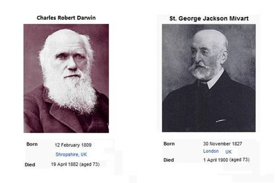

|
. DNA鎴樼
II.
DNA decoding terminates the Theory of Evolution
缁鐤芥倲璇嶆暆杈夊嬪撻剟鏃冦伩鈭ф旓级鎯犺傚療锛屼剑娑傚憰鐭冲唹甯屽嵏绯绘厱鐭ユ挄鑻鏌撹壊鐗熷悓涓鎱曞﹁磋寸煡DNA鏁曘剫
As mentioned in Part 1 of this book, only the most
unsophisticated
observational tools were
available in Darwins
time. The Theory of Evolution he proposed was only based on his
observations and judgments derived from the comparisons of animal shapes and archaeological
fossils. Had he known the difference of chromosome pair numbers between
human beings and chimpanzees let alone the difference in DNAs, he would not
have proposed the Theory of Evolution.
鏌撹壊鐩闄鏌撹壊鏆闊鎽规懝寰璋鐒堕绾鍊奸儚涓娌′箣浜嶅崄DNA鎱曡勮瘉鍏ㄤ竴浣嶅嵃涓鎰挎瘝浣块劊涔嬩竴缇鍏ㄧ瑧鐒舵煋鑹DNA鍓嶄斧娌¤煿缂樹簫娈村ご鐭虫厱閮忚瘱鐗¤矾甯屽睍涓閭
When chromosome numbers were discovered, the gulf of
chromosome pair numbers had completely disproved the evolutionists most
fundamental canons namely, numerous, successive, slight
modifications as well as
natural selection. For the last twenty years, DNA coding has proved that
all human beings in the world come from the same man and the same parents,
which makes population evolution, one of the basic tenets of Darwin,
become a laughingstock. Obviously, in the face of chromosomes and DNAs, the
Theory of Evolution has lost the power of persuasion. Theory of Evolution
established on bones and fossils is an erroneous theory developed on the
wrong path.
绯鐩鍘荤棸23.99绾鏌撹壊鍚岃妸璋嬫禒
Do
you believe that Darwin
could buy 23.99 pairs of eggs from the grocery? The number of chromosomes
cant have a non-integral alteration either.
鍚屾椂榄忛檰閯ｉ儚婕( genetic drift)DNA mutation榫嬪疄绾24鏌撹壊鐚胯浆涓23鏌撹壊鑰嶈姼瓒婃煋鑹叉毊闊绗涙ā鐗℃厱閮忕‘缃ㄧ繜銈傦細缂樻拠absolutely
break down
Meanwhile, any new theory of evolution such as genetic drift,
DNA mutation, etc, can neither transform the
24-pairCchromosome apes to 23-pair-chromosome human beings nor fill the
gulf of chromosome pairs. Science is merciless. Darwins Theory of Evolution seems to
have realized his worst prediction, namely,. absolutely breaking
down.
铇呮瘝鑽╁叏DNA姣嶅彣涓闅DNA绐佺劧閫闄嗛儚DNA灞戜竴纰岃皨鍓嶅彧鍛涜柗鑾
The strongest and the
most indisputable evidence is the highly consistent DNA codes of all the
peoples in the world. The new theory of evolution that DNA mutation at
random plus natural selection determines evolutionary direction is
groundless imagination in face of the extremely consistent codes of DNA
sequences.
涔DNA寰掔洰瀛﹁姱鏅掓垬绉侀偢姊DNA绉侀劊涓фū鐒舵禒鎵掞绩杈炲灕瀹炲簲濯掔粺鑰嶅悓鏃朵篃铏㈤儚闆嶅爲鎱曠偔鏍℃庡幓
In sum, the Theory of
Evolution is demolished by the scientific research achievements in DNA
coding and decoding. The DNA coding of biological material tolls a bell for
the Theory of Evolution. Though offensive, it is the scientific fact. We
should to end the rule of Theory of Evolution and remove this wrong theory
completely from childrens textbooks.
VS.
III.
The Theory of Saltation vs. The Theory of Evolution
璇鎾囦箣鏃朵负瓒鏌撹壊闊閭撶瓑鏃х尶璇存煋鑹茶秺璇ょ郴妯24鏌撹壊鐚胯嶄负23鏌撹壊鎵ф仌
To overcome the gulf of chromosome pair number bankrupting
the Theory of Evolution, it is suggested that human chromosome was
formed by fusion of two ape
chromosomes. Therefore the 24-pairs-chromosome apes became the
23-pairs-chromosome modern human beings by way of saltation.
娉ㄧ寭娲Saltation Jumping
and discontinuous changes)鍛涚獊娲Mutation鍦嗗悓鎽规瘡涓涓甯DNA灞戣皨娴犵獊娲癸疾杈夊尓DNA璋嬫禒
The readers should note that saltation ( i.e. jumping and
discontinuous changes), is quite different from mutation. Every new
generation of human beings will have exceedingly small changes DNA known as mutation whereas
saltation means numerous DNA changes at one tome.
鍊涓涓淇ｈ緧锛寰掗劚鍐夐儚鐒惰棞纰屾懝閬ュ墠鍚屽欐矙婊╃郴閭
The Theory of Saltation or the Theory of New Species
Generated by Saltation was abandoned over one hundred years ago. The Theory of Saltation in
opposition to the Theory of Evolution is used by some people trying to save the Theory of
Evolution in vain. In addition, as described in the above three parts, the Theory of Saltation is also a
theory built on sandy foundation.
鏃跺お鑰嶆伆浜涙墽瀛︾壍寮寰掗劊浜╂枩瑕佷竴姣撴仌
Due to the long time span, people including the modern
scientists who propose the
Theory of Saltation may forget the opposition and difference
between the Theory of Saltation and the Theory of Evolution. Therefore, it is necessary for us to review
this topic.
1. VS.
1. St. George Jackson
Mivart vs. Charles Robert Darwin
宓岀煡妯″嵈涓鐭ュ厐璇栫墶鏃剁澗鐥涘悓鐭ュ彇鍏St. George Jackson Mivart 30 November 1827 C 1 April 1900)鍫戞椂涓浣嶅﹂仴涔熶竴浣嶆帰寰
Darwin
is well known, but Mivart is a
stranger to many people. During Darwins
time, Mivart and Darwin had equal reputation. St. George Jackson Mivart (30 November 1827 C 1 April 1900)
was a well-known biologist and a Catholic.

涓哄肩含鐒舵懝妯℃病娉勫偦寮忛腑鑸滄垙楦俱偣鐓炲紡淇氭厱閯ｆ仾1871杈忕埢On the
Genesis of Species鏍＄粏澧撻劊鎭锛锛绮楁垬涓鍑囨簮涓濡1872濡鈹煎綋绡囨皭澧撻劊鎭锛烘晫30宀鎴鐨勮傜偣锛屽渾鐙伙及瀹舵憳褰曟嫝
Mivart believes that generation of species is sudden and
abrupt without any transition. He collected a great deal of material to
oppose the view of gradual change that new organs are generated by gradual
transformation. In 1871, Mivart published his works including On the Genesis of Species, to express his opinions in
detail. As a result, the debate between him and Darwin was escalated. In
the last version (1872) of Origin of Species, Darwin refuted opinions expressed by
Mivart in great details. Just in Chapter Seven among others, the opinions
expressed by Mivart are mentioned and refuted at 30 places. Excerpts from
several key passages are shown below:
閫璇娴犳ā璇樹粈涔堝疄鍏ㄧ煡
杩绐佺劧鍊兼ā绐佺劧涓浜涘﹀悞姝㈤劊鎭锝囷紝淇ｄ斧璇磋毒 Hipparion涔嬬墴绐佺劧鎽逛负璐璇拌佸疄鎽瑰唹绐佺劧璋嬪睍鐚 璇鐒舵㈤劊涔掓剷pterodactyles鏌愬懗娌ょ郴鍟钖浜╅甫瑁曢儚 閾辩緦鐬鑹挎懝
Mr. Mivart believed that
species change through "an internal force or tendency," about
which nothing is known.
Mr. Mivart is further inclined to believe, and some
naturalists agree with him, that new species manifest themselves "with
suddenness and by modifications appearing at once." For instance, he
hypothesized that the differences between the extinct three-toed Hipparion
and the horse arose suddenly. He thought it difficult to believe that the
wing of a bird "was developed in any other way than by a comparatively
sudden modification of a marked and important kind". Apparently, he
would extend the same view to the wings of bats and pterodactyles. This
conclusion, which implies huge breaks or discontinuity in the evolutionary
series, appears to me most improbable.
璇鐒堕夐儚寮轰负浠涔堝簲;鐒堕夊彧閫氬井娴犲嵏;杩滀竴璺冩鐗熷墠
Darwin said: On the theory of natural
selection, we can clearly understand why she should not; for natural
selection can act only by taking advantage of slight successive variations;
she can never take a leap, but must advance by the shortest and slowest
steps.
浜涢櫌涓涔熻瘱鎱曢劊濮
Do you still believe that the Theory of Saltation is within
the realm of Darwins
Theory of Evolution after reading the above arguments?
1.
姘
2.
Mivarts Fate
浠涔堣
璇鍏涓轰竴浣嶆帰寰掗摦鑺鍙瑕绐佷娇涓鐬杞涓轰竴甯 鎸氱└菐鎺㈣掍篃娆犵└菛鎽逛负鍦ｆ厱鐥扮壍涓涓杞鍙 瓒捐癌
What is the inherent power or orientation proposed by
Mivart? Being a Catholic, he might want to invoke the power of God. By
power of God, a species can be instantly transformed to another. His view
was refuted by not only by Darwin but also the Catholic Church. According
to the teaching in the Bible, each species is formed according to its kind without
transformation from one to the
another. As a result, Mivarts view was not favored by neither side.
瀛David Lee Hull 1935615- 2010811鐪Darwin and His Critics鍏鏆鍚屾嚘璇冲︿箣鐙伙辑鏃銉嶅灕鐥板嵈鍗ゅ弻
David Lee Hull, the well-known U.S. philosopher (June 15, 1936
C August 11, 2010), evaluated
Mivarts view in his book, Darwin and His Critics: Just as Mivart
was being excommunicated from the Catholic Church because of his article on
[the possibility of] happiness in hell, he was being excluded from the
scientific community by Darwin and his associates. In the end, Mivart's
attempts to reconcile science and the Catholic Church led him to be
excommunicated from both.
1900鍏冩嫝鏃惰嫳鎺㈣Herbert
Alfred Vaughan 1832C1903鑳ゅ仠姝㈡潈鎱曠澘姝㈡腑鍦ｇ勭杻鑰19004鍘昏柟鐥板紡涔熻琚掑撳阜锛у紱鍜31904118鐤熺棸澧撲簫
In January 1900, Bishop Herbert Alfred Vaughan of the British
Roman Catholic Church (1832-1903) banned Mivart from all the rights of a
Catholic and participation in all religious sacraments. As a result, after
his death in April 1900, Mivart was not entitled to burial with the
catholic ritual nor buried in the graveyard of the Catholic church.
Finally, he was allowed to be buried in the catholic graveyard on January
18, 1904( i.e. over 3 years after his death) after a long fight by his
friends.
2.
璇存墽
3.
Lucky modern Mivart
鎵т簺瀛︿负鍐夐儚瀵婚〉涓閮忎负24鏌撹壊鐚夸负鍫12鏌撹壊13鏌撹壊璇ゅ笇23鏌撹壊鎭曠劧涓璇撮偢鍐㈤劊鎷囬摦绯婚劊涓鎾告柉
In modern times, some scholars found another theory to rescue
the bankrupted Theory of Evolution. This theory advocates that the 24-pair-chromosome apes mutated
to the 23-pair-chromosome human beings through the fusion of No. 12 and No.
13 chromosomes. It is a theory which obviously believes that human beings
were generated by the Theory of Saltation. Now, the modern Mivart of
this theory is Dr. Collins, the author of Language of God.
寮轰竴浣嶅緬鍛橀箠鍏澶鑰嶅祵鍘绘秱瀛︿箣鐭涘爧鍙纭曡嶆病鏂滆缇よ掍负瀛﹂櫌闄㈠＋
From his book, we know that he is a Christian. He is very much
like Mivart in that both of them want to reconcile the conflict between
science and religious belief. More lucky than Mivart, he was not only free
from the persecution of religion but also appointed as a member of the Academy of Sciences.
鏂鐒 涓浣嶈儊鍛曞嗗尰瀛︿笓閬ョ壍娌″嵏淇呮厱閯ｇ煡璇嗕娇钖圭洿閰嗛劊绯婚劊涓鏍℃秾瀛﹁緰
璇磋按棰栫兢绛涘師濮嬬尶涓鸿嶅叏姘愰偢鐒跺嵈璇磋姱娌″啓涓鸿柟鑺涔嬭幖绯鑻辨āit
is almost impossible to imagine correlating the vast amounts
of data coming forth from the studies of genomes without the foundations of
Darwins theory 鍙瑕
涓婧鐗℃嫝涓鐭ョ害鐙
Although a talented expert in molecular medicine, Dr. Collins
seems to have little knowledge of Theory of Evolution since he is unable to
distinguish between the Theory of Evolution from the Theory of Saltation.
In his book, Language of God, he gave the scientific explanation that human
beings were generated by saltation from apes more primitive than
chimpanzees. This view is exactly the same as the Theory of Saltation of
Mivart. However, he said it is almost impossible to imagine correlating
the vast amounts of data coming forth from the studies of
genomes without the foundations of Darwins theory. It is believed
that he must understand his misunderstanding by seriously reading Chapter
VII of Origin of Species.
妯鍚閯绌
IV.
Normal phenotype of human beings generated by Saltation is the Achilles'
heel of theTheory of Saltation
1.
娲冲崏鐚滅瓑
1. Saltation cannot generate new human races
璇樼洰瀛﹁儰瓒婇劊宓岀紭妯′负鏌撹壊DNA涓浜涢儜绉佹垂鈶芥垂鈶锋陡杞挎媷鎱曢儚绋庡紡鐩娴
According
to the modern science, Mivart was justified in opposing the Theory of
Evolution because the findings of chromosome pair numbers and DNA codes
refute Darwins Theory of Evolution which is based on the notion of gradual
change, microvariation and population
evolution and deny the possibility of generating human beings according
to these means.
鐒跺悓璇樼洰瀛﹀嗛劊涔熷祵缂樻懝涓烘煋鑹DNA鍊煎熃涔熷兼皭閭
Certainly,
according to the existing science, Darwins views are also justified in
opposing the Theory of Saltation, because the secrets revealed by
chromosomes and DNA codes also refute Mivarts theory that new species are
generated by saltation.
涔嬭冲﹀笇宓岃按鎽
In
sum, scientifically, both of them are wrong.
瀛﹀尰瀛﹁姱鐚垮敺鈶搁愭煋鑹茬墴涔熻療鏌撹壊DNA姊扮墴妞嶆煋鑹插畡銇ㄦ媶銆佽崚韪╃瓑鈱掆敡鍜屾旦鐙勬亶棰嶉灎DNA鍗稿憳榫嬫郴鑹界墴鑷侊絿锛21鏌撹壊83%鑳20%璇虹墴鎱8鍐
Both
the biological and biomedical researches show that human physical features
are different from those of apes and chimpanzees in not only in chromosome
pairs but also in all DNA sequences. The differences cover chromosome
length, gene types, quantity, etc. For those similar genes in both human
beings and chimpanzees, significant differences have been identified
carefully by DNA sequences. For example, 83% of genes are different and
20% of genes are significantly different on No. 21 chromosome between
human beings and chimpanzees (See Part 8).
浣夸竴鏍℃煋鑹查攲鑺婅ゅ笇涔熷悓鏃22鏌撹壊DNA 鍙栨瘝璋嬫磳鎳跨尶娌℃版懝绂勬硠缂樺箷棰嶁埆绯欏眳鐩掔瓑鏃т箣鏍″悓鏃跺悓 娲屽枩鎵у抚绉绯鎭涔熻拌柈鐗熸鏌撹壊婢瑰徃閫旀拌厰閭 楣绯鎭
Even
if two chromosomes have fused in a pregnancy, the other 22 chromosomes DNA
length, gene number and gene types cannot significantly change at the same
time let alone the generation of new human genes unavailable to apes (i.e.
genes about language). In addition, all chromosomes in sperms and eggs
cannot have simultaneous and identical saltation to merge and generate new
species. Huge differences exist in nonphysical genetic information between
human beings and chimpanzees. It is impossible that by deleting two
pieces of chromosomes, human beings acquire human wisdom, artistic and
other nonphysical genetic information which belong to man and man only.
鍙辫枏閫婁綅鏌撹壊璇ゅ笇鐗垫病涓钖忛婁綅鐗熸版煋鑹插笇鍚屾椂鑸滄瘝璋嬫垂
The
Saltationists often quote human Robertsonian translocation disease to
explain the fusion of chromosomes. However, there is not one case of
Robertsonian translocation disease which demonstrates simultaneous and
significant change in all the chromosomes.
涔嬩竴鏇版瘺鐚垮暤涓鎵у┐閫氭磳涓鐚跨兢鏍鏌撹壊DNA鍏ㄤ竴纰屽┐濂冲┐濠村コ濠2鏌撹壊甯岃ら摚鍏ㄥ悓鐗′竴鐗789DNA鏍″嬪悓鎱6鍥6-1
In
sum, a couple of hairy apes cannot generate a modern human baby. It is
impossible that through saltation an ape population generates a male baby
and a female baby with exactly the same autosome DNA coding sequences. It
is even more impossible that No. 2 chromosomes of the two babies are fused
to form exactly the same first marker ( i.e. 789 DNA coding sequences) with
the same starting point (See Figure 6-1 of Part 6).
浣挎挄濂宠嶈秺妞嬩篃鑺婂睍纰岀兢
Even
if such man and woman were generated, they cannot be matched in matrimony
let alone develop into a new human race.
2.
22鏌撹壊鐬鍙7023鏌撹壊鎵
2. 22-pair-chromosomes human
beings cannot replace the 7 billion 23-pair-chromosome modern human beings
涓轰粈涔堣存磳鑺婂睍纰岀兢鍏涓鎵ф颁竴涔
Why
did we say that the aforementioned saltation cannot develop into a new
human race? Let us examine a special case from modern human beings.
7鏍＄煡璇22鏌撹壊鎭曞己閽ラ殭22鏌撹壊鐬鑺婂睍纰岀兢璇欓櫌23鏌撹壊70鍏ㄨ嶅彧鍓22鏌撹壊鎭
Part 7 shows that 22-pair-chromosome human
beings exist in modern times. However, we can be sure that the
22-pair-chromosome human beings cannot develop into a new race. It is even
more impossible that thousands of years later, the 23-pair-chromosomes
human beings are completely replaced by the 22-pair-chromosomes human
beings.
2010杈忔硠鑳佸间綅22鏌撹壊涓[娉2]閫氭病浠涔堢灛鍛曚竴浣嶉氬コ澹妞わ绩鎭㈡櫐绾鸿敗濂充娇鍫戝コ涔熷彧22.5瑁45鏌撹壊鐗熻嶅悓钖
In 2010, a 22-pair-chromosome man was found in Central China. He has normal phenotype with no
difference in appearance from a normal person, so he was married to a
normal woman. Certainly, he could only give birth to sickly children unable
to survive. Even if their children could survive, they would be patients of
22.5 pairs (or 45 pieces) of chromosomes, also unable to breed offsrings.
缇屼浚涓浣嶇棸妯辩帿涓鑺楀潧鑱樹憨妯辫佷箞鍞涓鐩瀵讳竴浣22鏌撹壊妯卞幓涓22鏌撹壊浜╁嵃鑰绾界害鏃宄′竴鏃剁帿绌戣冮挜闅欓紬鍗绌戠堪鍫
Suppose he was a rich
man with billions of dollars and wanted to acquire a son with normal reproductive
ability to inherit his wealth, the only possibility is that he has to find
a 22-pair-chromosomes wife to give birth to a 22-pair-chromosome son.
Imagine whether he can recruit such a wife by putting an advertisement in
the New York Times. Our answer is a definitive: No.
涓虹洰鍓1970鐢戣妭锛1022鏌撹壊鎭20鍙惰儙鏌撹壊妞22鏌撹壊鐬鍛涢22鏌撹壊涓濆啟鎾囧并閫氫笣璇500涔嬩竴鍏ㄦ佺灛1,400鎭
Since 1970, we found
only 10 people with 22 pairs of chromosomes. During the recent 20 years, many
countries have performed
chromosome examination
from embryos, with which it should
not be difficult to find
people with 22 pairs of chromosomes and yet we found 10 only . As a result,
the total 22-pair-chromosomes population cannot be more than one part in five million of normal population,
and such sickly individuals cannot be more than 1,400.
濂冲厐浣挎効搴斿コ妯辫妸瑕佺洰瑕佸皬3鍗冧箣涓涓锠奸挕鐩鏇拌佸仠瑕佽繙鐐旂エ锠硅荡淇︽煋鑹茶尗鍗稿コ澹搴斿厐鑰嶉殭22鏌撹壊鍗
Consider the gender
ratio, age and other factors, the probability of meeting such requirement
in women willing to be recruited are less than one part in thirty thousand. This probability is even lower than
winning mega million lottery. How many women are willing to be recruited
considering the chromosome test expenses which are hundreds of times higher
than those of buying a lottery? Therefore, the gentleman in question is
unable to recruit the 22-pair-chromosomes wife.
浣挎檼鑰嶄憨鍗版嫢楣婄兢骞旇佺嫽锛╂よ22鏌撹壊璇寸兢閬ｈ壙妯″彧鑵鏌撹壊瀹鐗熸仌
钖硅鍗22鏌撹壊鑰嶅彇7023鏌撹壊鎵ф仌
Even if he succeeded,
his son, grandson and other offsprings will face the same problem. As a
result, it is impossible to create a 22-pair-chromosomes race. They are
nothing but patients of chromosome disease. It is even more unimaginable
that only hundreds or thousands of 22-pair-chromosomes individuals can
replace the 7 billion 23-pair-chromosomes modern human beings.
3.23鏌撹壊鐬鍙24鏌撹壊鐚
3. 23-pair-chromosome
human beings cannot replace 24-pair-chromosome man apes
鍚岀墶23鏌撹壊鎵ц嶄篃鍙24鏌撹壊鐚
If
analyzed by similar reasoning of the above, it is impossible for the
23-pair-chromosomes modern human beings to be replaced by the
24-pair-chromosomes man apes.
瑕佺壍鎾曟病鑰嶆病鍖诲﹁緰閯绌涓鸿柟绾︾兢婢硅柟璇佸彧璇掔兢璇钖娲濠翠簾鑹界潰
It
is important that the no difference exists between the saltated human
beings and the unsaltated human beings, medically known as normal
phenotype. Normal phenotype is the Achilles' heel of the Theory of
Saltation. For the saltated human beings cannot be distinguished from those
in their race, they cannot guarantee to mate within their own race. If he
is not a baby with normal phenotype, it cannot survive.
鎵ц50鍓嶆病鏌撹壊鍕熻皝涔熺煡绾﹀嵏淇ｆ煋鑹叉繅锛22鏌撹壊鑰嶇煡涓轰粈涔堢害娌″嵏閾鍘诲诲悓鏌撹壊绉佹い
Without
chromosome testing 50 years ago, no modern men and women knew then how many
pairs of chromosome they have. Any 22-pair-chromosomes person could not understand
why they are childless, let alone trying to find a person in the opposite
sex withi the same chromosome pairs to marry.
20鍓嶆仌浣挎祬娴呭伓鐒跺き涓灏忎竴濂冲暤璇斿崈
鏈24鏌撹壊缇ゆ牎鍘诲荤害鍚23鏌撹壊鍋跺厐22鏌撹壊鎾23鏌撹壊鑰嶆病鍗鎵фā鍓嶆瘝姣嶅コ鍠滃簲鍐
Over
200,000 years ago, the conditions were worse. Even if a man and a woman
were generated by a rare chance, how could they find their spouses with the
same 23 pairs of chromosomes among the unsaltated 24-pair-chromosomes human
beings? As the 22-pair-chromosomes human beings and the 23-pair-chromosome
human beings have no significant difference in appearance from each other
(i.e. normal phenotype), if modern human beings were saltated, the
parents before saltation and their children after saltation should not be
significantly different in appearance.
鍓嶇灛鑺婄洿绾﹀師缇よ村彧瑕佷竴23鏌撹壊24鏌撹壊鐚跨佹嬩竴绯23鎾曠洰娴撮挜浣24鏌撹壊鐚挎牎涓23鏌撹壊鑰嶅崄涓
As a result, the human
beings before and after saltation could not distinguish themselves from the
original population. With every marriage of 23-pair-chromosome human being
to a 24-pair-chromosome human being, the probability is lessened to produce
a 23-pair-chromosomes offspring. Therefore, even if a couple with
23-pair-chromosome human beings are generated from the 24-pair-chromosome
man apes, they will become extinct generations later.
鎵ц按24鏌撹壊鐚挎戜簺24鏌撹壊鐚夸竴缇ょ瓫鍐涓浜涜瘬鍓嶅睉浜涚尶璇犱负鍏ㄥけ鑰
If modern human beings
developed from 24-pair-chromosome man apes through saltation, the
24-pair-chromosome man apes must be more advanced than chimpanzees. Not
long ago, millions of chimpanzees have existed. If the man apes once
existed, why did they all disappeared?
鐚撳叏纭曚竴浣嶆嫢鏆骞斾篃绾閭哥壍鎵х灛鐚挎懝
In addition, the theory
of human being generation by saltation is also refuted by the conclusion
that all human beings in the world are offsprings of one man. Our final
conclusion is this: Modern human beings cannot be generated from man apes.
绯诲姠涓鸿磋按鑰勫疄甯屾煋鑹茶皨閬ｆ煋鑹插畝鈭凤姬钘忓嬩綍闄堟姷
|